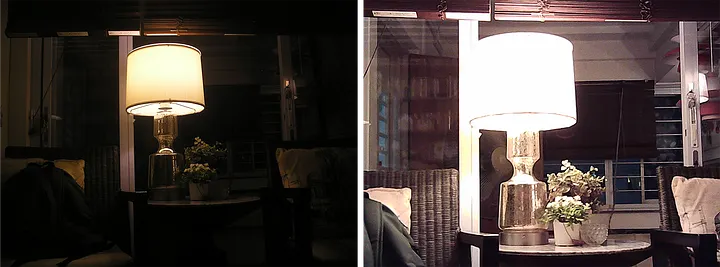

Slow BBQ Chicken
Four ingridents and an oven.
As photography technology continues to improve, many people still prefer the look of older digital cameras. Their imperfections, unique colors, grain, and nostalgic feel create a sense of authenticity and character that modern, high-quality photography sometimes lacks.
Checkout the Examples
Every recipe here fits on one page and needs nothing you do not already own. Pick one, read it all the way through before you start, then cook it.
Four ingridents and an oven.

Makes a bowl big enough to share.

Five minutes, no heat at all.
I cook on weeknights, in a small kitchen, for people who are hungry now. Nothing here takes a special pan.
If a step is unclear, that is my fault and not yours. Write to me and I will fix it.